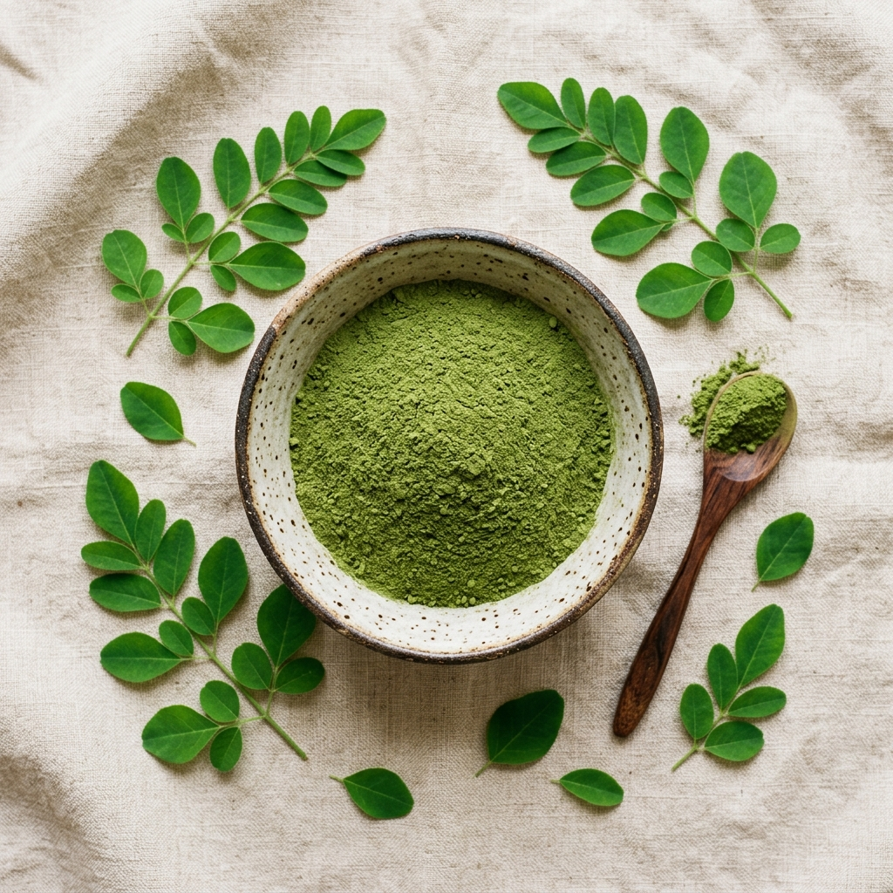

Our Mission
Grown with purpose.
Support Our Mission
Grown with purpose.
Delivered with integrity.
Nobori Agro was born from a simple conviction: Bangladesh's hills and valleys produce some of the world's most potent botanicals — yet post-harvest loss and middlemen rob both farmers and consumers of their true value.
We partner directly with 340+ smallholder and indigenous farming families in Sylhet and Bandarban, paying fair prices and building a transparent supply chain from seed to seal.
Our solar tunnel dryers replace destructive industrial heat, returning to ancient wisdom — sun-drying — but with modern precision temperature control.
12,000+kg post-harvest loss prevented
340+farming families supported

Lab Certified
Batch #NB-2026-08
Batch #NB-2026-08